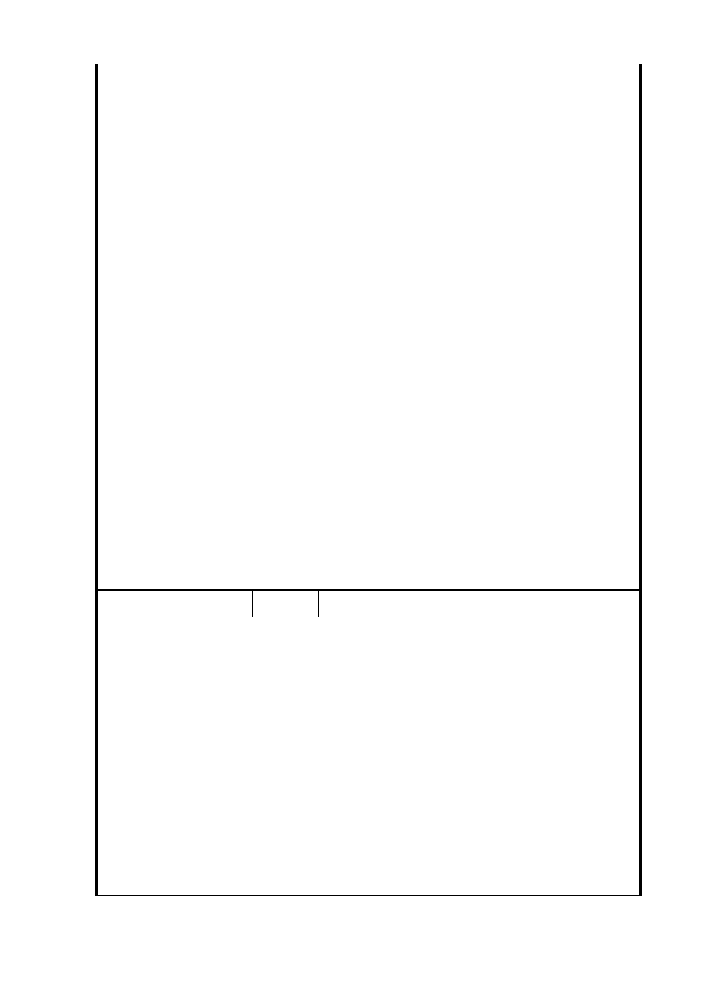

危險地帶。專家鑽探結果，都委會要審查，依法行事。
這是開發前就要先作的功課。
七、 廣慈園區裡要興建禮堂，很好!社會局每年在重陽節舉
辦「阿公阿嬤活力秀」還有其他活動時，就不用向奉
天公廟宇借場地，但興建時舞台面要大，上下台要作
行動不便者及身障朋友的「安全措施」。
建議辦法
一、 查信義區公所現址都市計畫變更案業經臺北市都市計
畫委員會審議通過在案；至廣慈博愛園區現址係以提
高整體公共利益為規劃考量，全區變更為特定專用
區，除提供現有都市計畫之服務機能外，將檢討留設
未來信義區公所搬遷所需之辦公空間，並整體規劃留
設公共開放空間，使其發展為結合社會福利設施、公
共住宅、警政、辦公、鄰里商業及公共交通轉乘服務
市府回覆
等之複合式公共服務特定專用區。
意 見 二、 經濟部中央地質調查所於 103 年間函告尚未發現活動
斷層，另本局將於本案規劃設計發包後，優先要求設
計團隊進行地質鑽探。
三、 公共開放空間如編號 1。
四、 考量本基地未來使用者多為老人、身障及被照護者，
爰將透過整體規劃、設計，提供更友善之公共使用空
間，以提供居住者及使用者更安全、友善之綠色都市
環境。
委 員 會 決 議 同編號 1
編 號 5 陳情人 江○萍
一、 信義區大型公園集中信義計畫區，其他人口稠密處都
是鄰里小公園，尤其現在地球暖化氣候驟變需要保留
綠地作防災用途，且生態上需要有濃密跳島作為生物
存活的基地!及周遭氣候的調節，受保護樹木還未定
案，就已經處理作設計基準!
二、 柯市長團隊知道為何原來BOT案不能在預定期程完成
陳情理由
環評、都審、樹保審查？就是因為郝市府團隊將自己
認定的老樹來作建築物的規劃。
三、 住宅是小房型，之前是設計中大坪數，我想了解之前
社會局高層在這開發案佔重要的角色，但是在此案
中，看到都是林局長在主導。
四、 信義區全區作整體的評估，如果政府公有地都開發，
是否也要嘉惠信義區的地區發展。
- 10 -